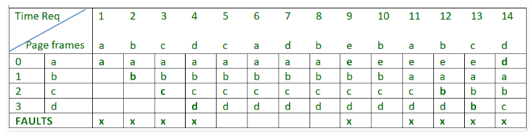

First In First Out (FIFO) Page Replacement
This is the simplest page replacement algorithm. In this algorithm, operating system keeps track of all pages in the memory in a queue, oldest page is in the front of the queue. When a page needs to be replaced page in the front of the queue is selected for removal.consider page reference string 1, 3, 0, 3, 5, 6 and 3 page slots.
- Initially all slots are empty, so when 1, 3, 0 came they are allocated to the empty slots = 3 Page faults
- when 3 comes, it is already in memory so = 0 Page fault
- Then 5 comes, it is not available in memory so it replaces the oldest page slot i.e 1 = 1 Page fault
- Finally 6 comes, it is also not available in memory so it replaces the oldest page slot i.e 3 = 1 Page fault

There are 9 page faults using FIFO algorithm.
- Beladys anomaly : Belady’s anomaly proves that it is possible to have more page faults when increasing the number of page frames while using the First in First Out (FIFO) page replacement algorithm. For example, if we consider reference string 3, 2, 1, 0, 3, 2, 4, 3, 2, 1, 0, 4 and 3 slots, we get 9 total page faults, but if we increase slots to 4, we get 10 page faults.